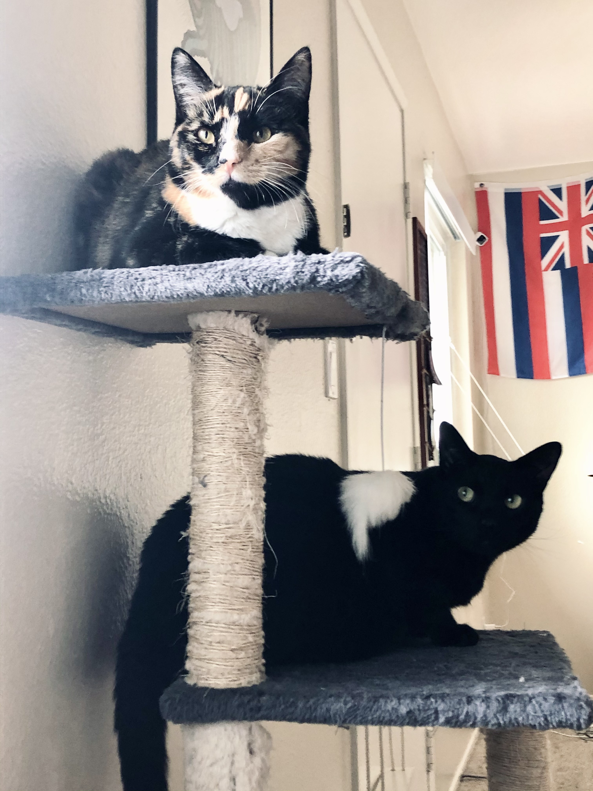
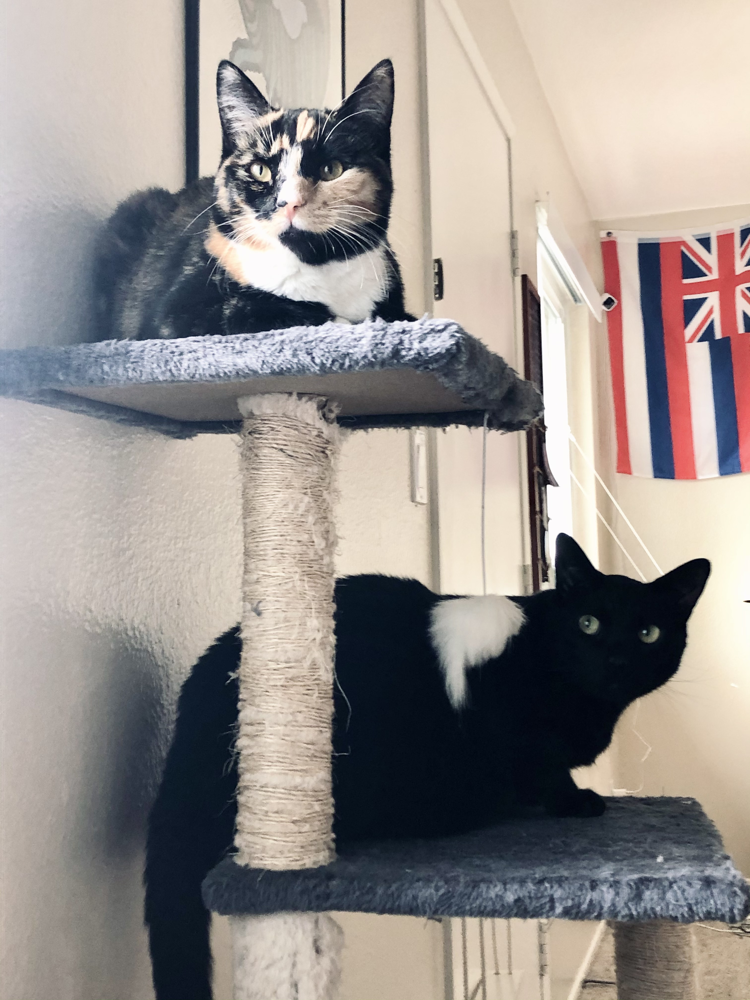

LAB 16 FANCY CSS 2
Challenges
This lab was challenging because it was incorporating alot more fany effects into our site and this time it was mostly with backgrounds and transiations not just text.
Problems
The problems that I had were creatiing the transtions. I find it difficult to create any moving aspect on my pages.
Solutions
The solutions to my moving images problem was to watch the leture and follow along with wes about all this.
 
